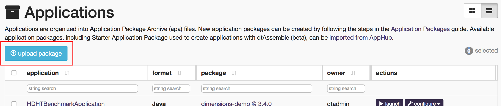

Building top N words using JAVA
This chapter describes the steps to build the application in Java using some source files from the Malhar repository, suitably modified and customized to run on a cluster (or sandbox). We will use the dtManage GUI tool to launch the application.
Step I: Clone the Apex Malhar repository
Clone the Malhar repository (we will use some of these source files in a later section):
-
Open a terminal window and create a new directory where you want the code to reside, for example:
cd ~/src; mkdir dt; cd dt -
Download the code for Malhar:
git clone https://github.com/apache/incubator-apex-malharYou should now see a directory named
incubator-apex-malhar.
Step II: Create a new application project
Create a new application project as described in (you can use either an IDE or the command line): Apache Apex Development Environment Setup
Step III: Copy application files to the new project
We will now copy over a few of the application files downloaded in Step I to the appropriate subdirectory of the new project.
- Delete files
Application.javaandRandomNumberGenerator.javaundersrc/main/java/com/example/topnwordcount. - Delete file
ApplicationTest.javafile undersrc/test/java/com/example/topnwordcount. -
Copy the following files from:
incubator-apex-malhar/demos/wordcount/src/main/java/com/datatorrent/demos/wordcount/to
src/main/java/com/example/topnwordcount- ApplicationWithQuerySupport.java
- FileWordCount.java
- LineReader.java
- WCPair.java
- WindowWordCount.java
- WordCountWriter.java
- WordReader.java
-
Copy the file
WordDataSchema.jsonfromincubator-apex-malhar/demos/wordcount/src/main/resources/to
src/main/resources/in the new project.
Note: This file defines the format of data sent to the visualization widgets within dtDashboard.
Step IV: Configure the application and operators
Next, we need to configure application properties. These properties accomplish the following aims:
- Limit the amount of memory used by most operators so that more memory can
be allocated for
fileWordCountwhich maintains the frequency counts. - Set the locality of a couple of streams to
CONTAINER_LOCALto further reduce memory pressure (necessary on the memory-limited environment of the sandbox). - Define the regular expression for matching the non-word string that delimits words.
- Define number of top (word, frequency) pairs we want output.
- Define the path to the monitored input directory where input files are dropped and the output directory (both HDFS) to which the per-file top N (word, frequency) pairs are output.
- Define the topics for sending queries and retrieving data for visualization.
To do this:
Open the file src/main/resources/META-INF/properties.xml, and replace its
content with the following:
<configuration>
<property>
<name>dt.attr.MASTER_MEMORY_MB</name>
<value>500</value>
</property> <property>
<name>dt.application.*.operator.*.attr.MEMORY_MB</name>
<value>200</value>
</property> <property>
<name>dt.application.TopNWordsWithQueries.operator.fileWordCount.attr.MEMORY_MB</name>
<value>512</value>
</property> <property>
<name>dt.application.TopNWordsWithQueries.operator.lineReader.directory</name>
<value>/tmp/test/input-dir</value>
</property> <property>
<name>dt.application.TopNWordsWithQueries.operator.wordReader.nonWordStr</name>
<value>[\p{Punct}\s]+</value>
</property> <property>
<name>dt.application.TopNWordsWithQueries.operator.wcWriter.filePath</name>
<value>/tmp/test/output-dir</value>
</property> <property>
<name>dt.application.TopNWordsWithQueries.operator.fileWordCount.topN</name>
<value>10</value>
</property> <property>
<name>dt.application.TopNWordsWithQueries.stream.QueryFileStream.locality</name>
<value>CONTAINER_LOCAL</value>
</property> <property>
<name>dt.application.TopNWordsWithQueries.stream.QueryGlobalStream.locality</name>
<value>CONTAINER_LOCAL</value>
</property> <property>
<name>dt.application.TopNWordsWithQueries.operator.QueryFile.topic</name>
<value>TopNWordsQueryFile</value>
</property> <property>
<name>dt.application.TopNWordsWithQueries.operator.wsResultFile.topic</name>
<value>TopNWordsQueryFileResult</value>
</property> <property>
<name>dt.application.TopNWordsWithQueries.operator.QueryGlobal.topic</name>
<value>TopNWordsQueryGlobal</value>
</property> <property>
<name>dt.application.TopNWordsWithQueries.operator.wsResultGlobal.topic</name>
<value>TopNWordsQueryGlobalResult</value>
</property> <property>
<name>dt.application.TwitterDemo.operator.wsResult.numRetries</name>
<value>2147483647</value>
</property>
</configuration>
Note: The package name within the Java files we just copied currently reflects the package from which they were copied. This may be flagged as an error by your IDE but the application should build with no errors when built with maven on the command line. You can fix the errors in the IDE by changing the relevant line within each file from:
package com.datatorrent.demos.wordcount;
to reflect the current location of the file, for example:
package com.example.topnwordcount;
Step V: Build the top N words count application
From your IDE build the application in the usual way
From the command line build it with:
cd topNwordcount; mvn clean package -DskipTests
In either case, if the build is successful, it should have created the
application package file
topNwordcount/target/topNwordcount-1.0-SNAPSHOT.apa.
Step VI: Upload the top N words application package
To upload the top N words application package
- Log on to the DataTorrent Console using the default username and password
(both are
dtadmin). - On the top navigation bar, click Develop.
- Click Application Packages.
- Under Applications, click the upload package button. 
- Navigate to the location of the
topNwordcount-1.0-SNAPSHOT.apaapplication package file is stored. - Wait till the package is successfully uploaded.
Step VII: Launch the top N words application
Note: If you are launching the application on the sandbox, make sure that an IDE is not running on it at the same time; otherwise, the sandbox might hang due to resource exhaustion.
- Log on to the DataTorrent Console (the default username and password are
both
dtadmin). - In the top navigation bar, click Develop.
- Under App Packages, locate the top N word count application, and click Launch Application.
- (Optional) To configure the application using a configuration file, select Use a config file. To specify individual properties, select Specify custom properties.
- Click Launch.
A message indicating success of the launch operation should appear along with the application ID.
Note: After a successful launch, monitor the top N words application following instructions in the chapter Monitoring with dtManage.